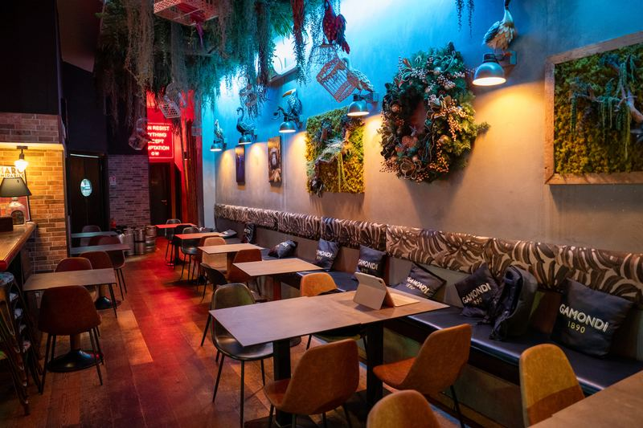
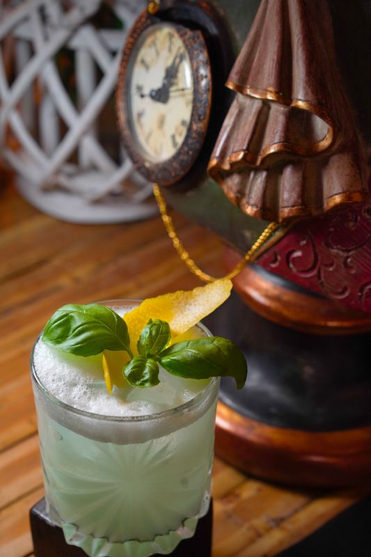
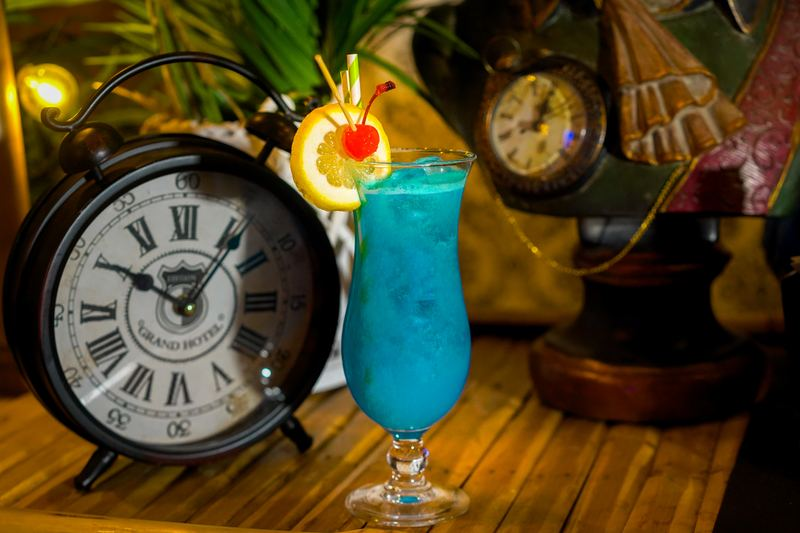
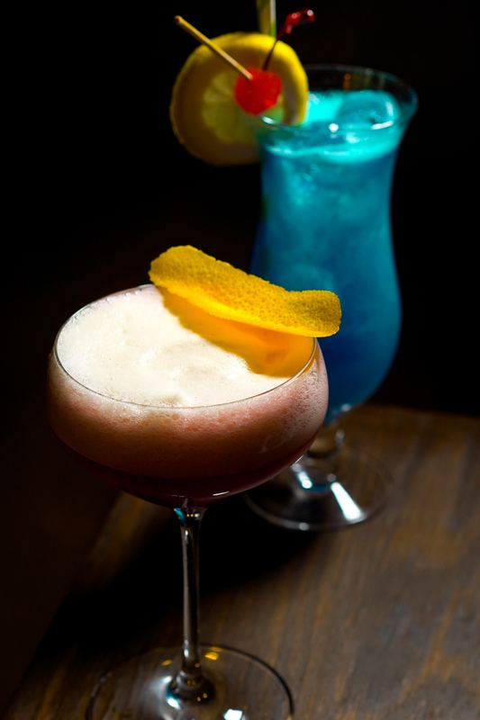
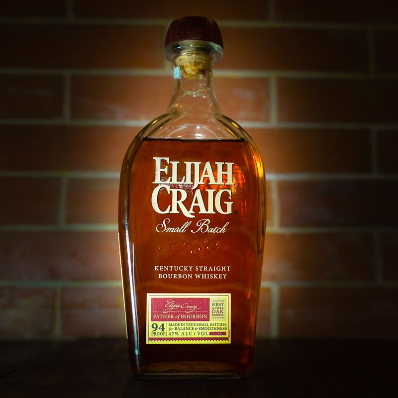

3 di 3 · Il dopocena · Un drink
La
Giungla
Stasera mi va un bel drink, e di fare tardi.
La Giungla è l'anima del bancone: piante, luci basse, il divano Chesterfield e una bottigliera di oltre 600 distillati.
“Il bere vince sempre sul male.”



Fatti da noi
Liquori e infusi
Liquore al cetriolo, vodka alle scorze di limone, tequila al basilico, gin al pepe rosa.
Sotto la campana
Affumicatura
Su qualunque cocktail, con la spezia che preferisci.
Food pairing
Cocktail e piatto
Scegli il piatto: il bartender ti prepara il drink che lo esalta.




Carta del dopocena
I veri intenditori non bevono drink: degustano segreti.
Caricamento del menu…
Prezzi in euro · i numeri sono gli allergeni, elenco completo nella pagina Menu · piatti vegani, vegetariani e senza glutine su richiesta
Ti va un drink?
Prenota il tavolo: dentro o fuori, nel patio.